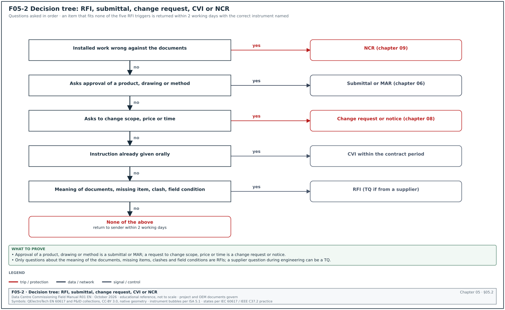
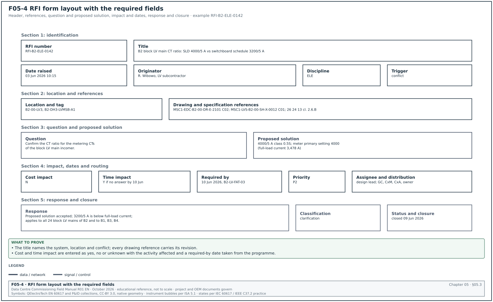
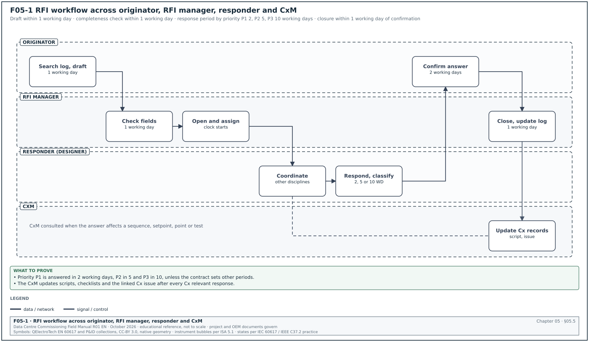
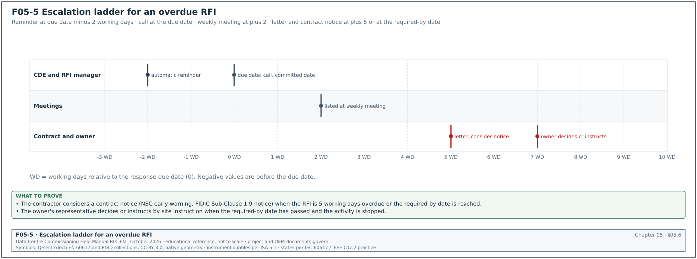
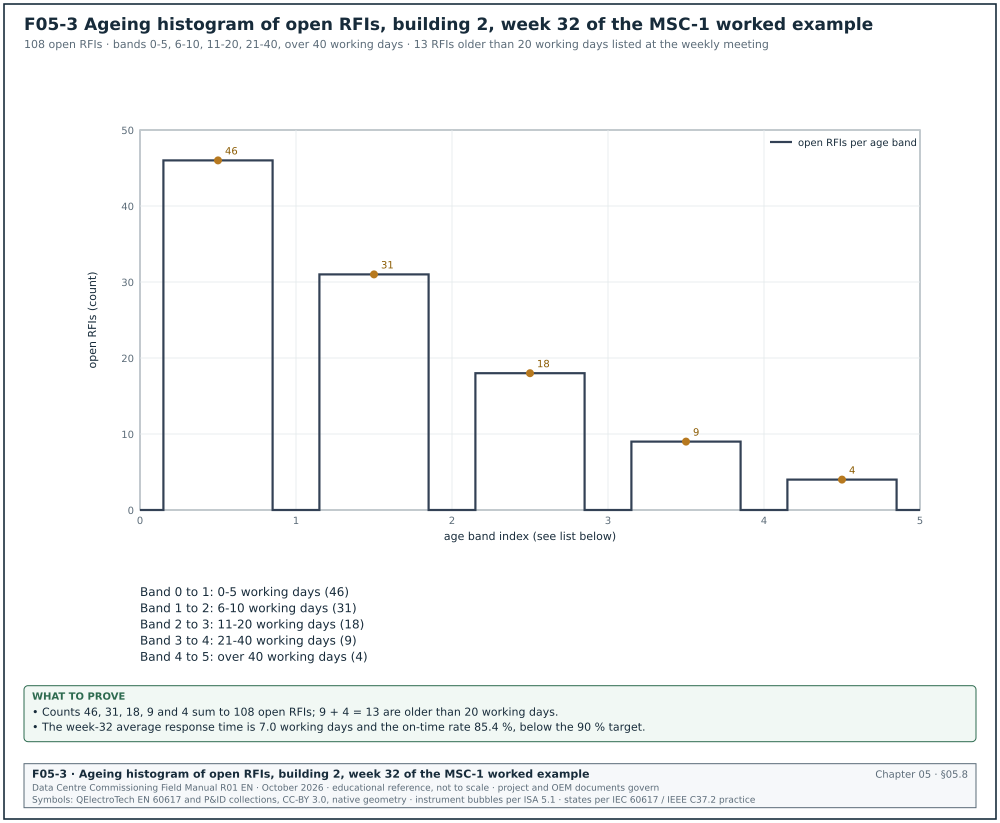
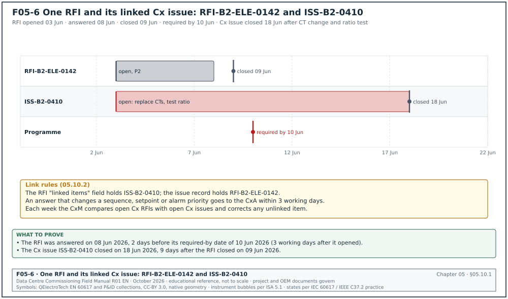
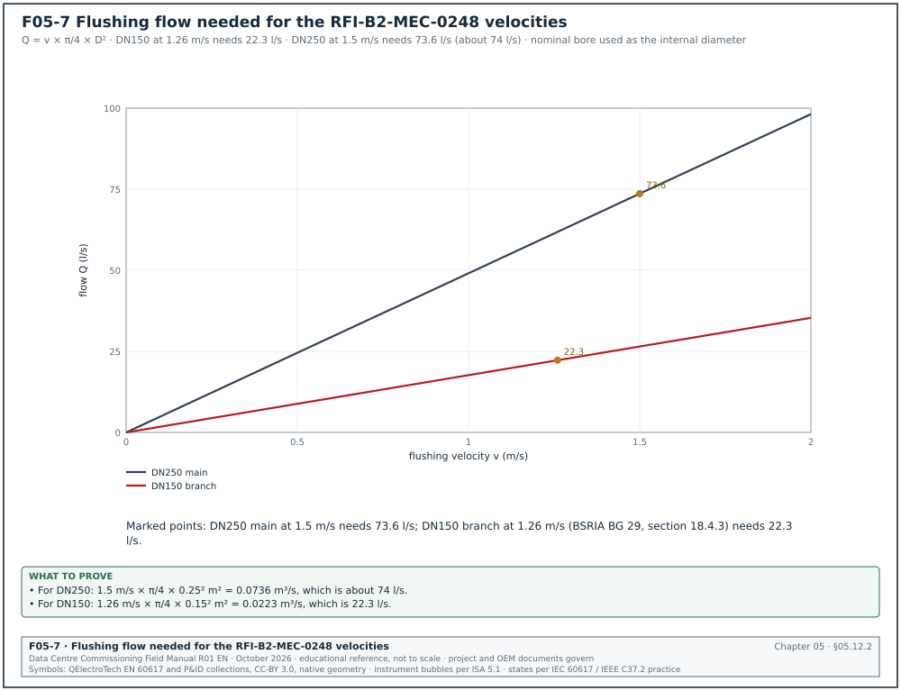
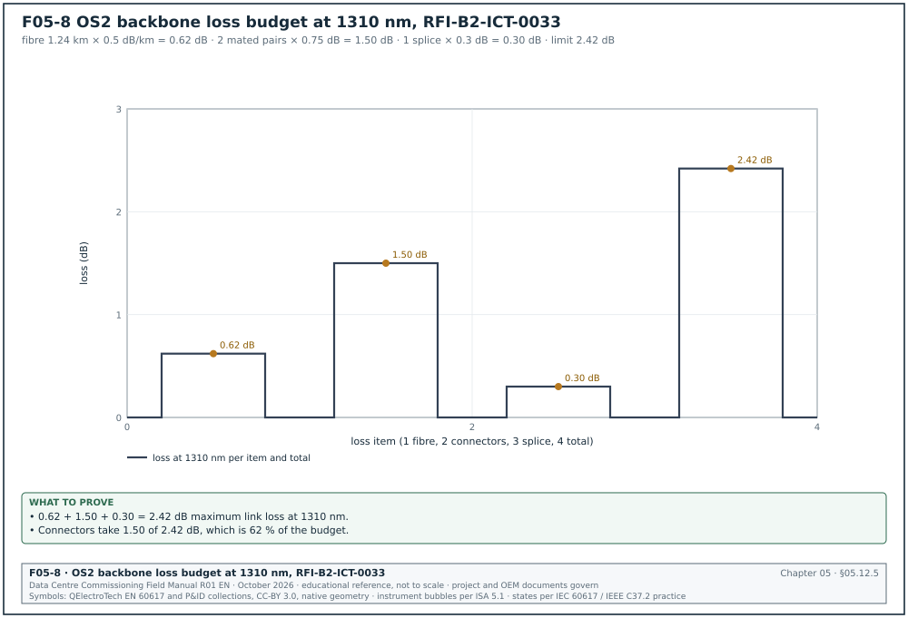

05.0Scope of this chapter
This chapter explains what a request for information (RFI) is, starting from the definition. It then gives the complete working method. The method covers the fields of the RFI form, how to write the question, the workflow and time limits, and the RFI log and its key performance indicators (KPI). It also shows how an RFI becomes a change and how RFIs feed the commissioning (Cx) issues log. It also covers the technical query (TQ), which many contracts in Asia, the Middle East and the United Kingdom use beside or in place of the RFI. Chapter 04 covers the common data environment (CDE) in which RFIs are stored, and chapter 08 covers change control.
- Definition and purpose. What an RFI is, what it is used for, and what it is not used for, with the contract basis in AIA A201-2017, Engineers Joint Contract Documents Committee (EJCDC) C-700, ConsensusDocs, FIDIC 2017 and NEC.
- Triggers. The five situations that create an RFI: a conflict between documents, missing information, an ambiguity, a field condition and a coordination clash.
- Related instruments. RFI, technical query (TQ), site instruction (SI), confirmation of verbal instruction (CVI), design change notice (DCN) or engineering change notice (ECN), non-conformance report (NCR), change order (CO) and submittal. One table and one decision tree compare them.
- The RFI form. Every field, its type and an example value.
- Writing the question. Rules for a question that can be answered once, and ten rewrites of poor RFIs from data-centre commissioning.
- Workflow and time limits. Roles, steps, priority classes, response periods and escalation.
- Responses. What a complete response contains, and what the contractor does when it receives one.
- The RFI log and KPIs. Log fields, KPI definitions, published benchmarks from the Navigant Construction Forum study of 1,362 projects, and an ageing histogram.
- RFIs and change. How an RFI response becomes a site instruction or a change order, the notice periods, and the contract rule that an RFI response does not authorise extra cost unless the contract says so.
- RFIs and the Cx issues log. How RFIs raised during commissioning are linked to issues, tests and retests.
- Fifteen worked RFIs. Electrical, mechanical, building management system (BMS), electrical power monitoring system (EPMS) and Schneider EcoStruxure Power Monitoring Expert (PME), fibre optic (FO) and fire protection examples from the MSC-1 campus.
Documents and standards used: AIA A201-2017 General Conditions of the Contract for Construction (Section 4.2.14 and related sections), AIA G716 Request for Information form, EJCDC C-700-2018, ConsensusDocs 204 Request for Information. The chapter also uses FIDIC Conditions of Contract for Construction 2017, NEC Engineering and Construction Contract guidance and CSI commentary on interpretations and clarifications. It also uses the Navigant Construction Forum report "Impact and Control of RFIs on Construction Projects" (April 2013), Procore RFI documentation, the UK National Annex code list for ISO 19650-2, and the MSC-1 case ledger.
05.1What an RFI is
05.1.1Definition
A request for information (RFI) is a written question from a party carrying out the work to the party responsible for the design or the contract documents. The party carrying out the work is the contractor or a subcontractor. The responsible party is the design consultant, the architect or engineer, or the construction manager (CM). The question asks for information that the contract documents do not give, or give in a form that can be read in more than one way. The answer lets the work be built, installed or tested as the documents intend. The answer is written, numbered and stored, so that everyone works to the same interpretation.
The term is used in the standard contract forms. Section 4.2.14 of AIA A201-2017 states: "The Architect will review and respond to requests for information about the Contract Documents. The Architect's response to such requests will be made in writing within any time limits agreed upon or otherwise with reasonable promptness." AIA publishes form G716 for the RFI, and ConsensusDocs publishes form 204, which contractors or subcontractors use to request information or instructions. EJCDC C-700-2018 uses the phrase "requests for information or interpretation" (CSI commentary, 2025). Under these forms the design professional is the party who first interprets the contract documents.
FIDIC 2017 and NEC do not use the term RFI as a defined procedure. On FIDIC and NEC projects the RFI is set up by the specification or by the project procedures. The contract mechanisms behind it are the Engineer's instructions, the notice for delayed drawings or instructions (FIDIC 2017 Sub-Clause 1.9) and the NEC communication and early warning clauses. The commissioning manager (CxM) reads the project procedure to find the RFI rules on such contracts. The clause numbers in this chapter are those of the FIDIC 2017 Red Book and the NEC4 ECC; check them against the Particular Conditions or Z clauses of the signed contract.
05.1.2Purpose
An RFI has four purposes.
- Obtain missing or unclear information. The work can proceed only when the information is available. For example, the BMS points schedule does not list the leak sensors on the coolant distribution unit (CDU) secondary loop, and the integrator cannot build the BMS database without them.
- Record the interpretation. The written answer becomes part of the project record. When the same question arises in another hall or another building, the answer is already available.
- Protect the programme and the cost position. A dated RFI shows when the contractor asked and when the answer arrived. If the answer arrives late or changes the work, the RFI is evidence for a time or cost claim under the contract.
- Prevent wrong work. A wrong assumption built into a switchboard or a control sequence costs much more to correct after installation than a question asked before the work starts.
05.1.3What an RFI is not
An RFI is used only for questions about the meaning of the contract documents. The table lists requests wrongly sent as RFIs and the instrument to use.
| Request sent as an RFI | Why it is not an RFI | Correct instrument |
|---|---|---|
| "Please approve the attached uninterruptible power supply (UPS) datasheet." | approval of a product is a review of a submittal | submittal or material approval request (chapter 06) |
| "We propose to use brand X in place of the specified brand Y to save 8 weeks." | a substitution changes the contract | substitution request or change proposal (chapter 08) |
| "The CDU vendor delivered late; please extend our programme." | a delay claim is a contractual notice | notice of delay or claim (chapter 08) |
| "The installed current transformer (CT) ratio is wrong; who will pay to replace it." | a defect in installed work is a quality matter | non-conformance report (chapter 09) |
| "The electrical contractor keeps blocking our access." | a coordination complaint is a management matter | meeting action, site instruction or letter |
| "Add 3 more points per CDU to the BMS." | a request to add scope is a change | change request; if the designer agrees, a change order |
| "What is the date of the next integrated systems test (IST) window." | a programme question is not about the contract documents | Cx coordination meeting or programme query |
An RFI that asks for a change in scope, cost or time is still answered. The answer states that the matter is a change and goes to the change procedure. The RFI response alone does not authorise the change.
05.1.4Triggers
The five triggers below cover almost every valid RFI. The trigger is recorded in the RFI log because each trigger points to a different cause in the design or coordination process.
| Trigger | Definition | Data-centre example |
|---|---|---|
| Conflict | two contract documents state different requirements for the same item | the single-line diagram (SLD) shows a CT ratio of 4000/5 A for the block low-voltage (LV) main, while the switchboard schedule shows 3200/5 A |
| Missing information | a document needed for the work does not contain the item | the BMS points schedule lists no points for the CDU secondary-loop leak detection cable |
| Ambiguity | the document can be read in more than one way | the specification says "UPS shall transfer to bypass on overload" without stating the overload level or the time |
| Field condition | the site differs from what the documents assume | the cable trench in building 2 has a concrete beam at the location of the fibre route crossing |
| Coordination clash | two disciplines' designs occupy the same space or conflict in function | the fibre tray route clashes with the 3,200 A busway in the hall 3 corridor ceiling |
05.1.5Who raises RFIs on a commissioning programme
- Contractors and subcontractors. Most RFIs come from the installing contractors during construction.
- The commissioning manager. The CxM raises RFIs when a test script cannot be written because the sequence of operations, the setpoints or the acceptance values are missing or in conflict.
- The commissioning authority (CxA). On some programmes the CxA raises design-review comments; when a comment needs a design answer after the design is issued, the CxA routes it as an RFI through the CxM.
- Suppliers. Manufacturers raise technical queries (TQ) during engineering of their equipment, through the contractor.
- The owner's operations team. Operations staff raise RFIs through the CM when an operating requirement is unclear in the design.
05.2RFI, TQ, SI, CVI, DCN, NCR, CO and submittal compared


05.2.1Comparison table
The instruments below appear on most data-centre projects. The names vary by contract; the functions do not.
| Instrument | Who raises it | Purpose | Can it change cost or time | Typical response period |
|---|---|---|---|---|
| RFI (request for information) | contractor, CxM | ask for the meaning of the contract documents | the response itself does not; a change follows only through the change procedure | 5 to 10 working days; contract governs |
| TQ (technical query) | supplier, subcontractor, contractor | ask a technical question during engineering or manufacture, with or without a proposed answer | same as RFI | 5 working days typical |
| SI (site instruction) | CM, engineer | instruct the contractor to do something; may include a clarification | yes, if it changes the work; the contract change clause applies | immediate; valuation later |
| CVI (confirmation of verbal instruction) | contractor | confirm in writing an instruction given orally on site | same as the instruction it confirms | contractor sends within the period the contract sets (for example 2 to 7 days) |
| DCN or ECN (design or engineering change notice) | designer | issue a design change, with revised drawings | yes, through the change procedure | when the design change is ready |
| NCR (non-conformance report) | inspector, CxM, contractor's quality team | record work that does not meet the requirements | the contractor bears the cost of correcting its own non-conforming work | corrective action plan in 2 to 5 working days |
| CO (change order) or variation | owner, engineer | change the contract scope, price or time | yes; this is its purpose | after valuation and agreement |
| Submittal or material approval request (MAR) | contractor | obtain review of proposed products, shop drawings and methods | no, if compliant | 10 to 14 days or the contract period |
05.2.2Decision tree
Figure F05-2 shows the decision tree. The CxM and the contractor use the questions in order.
- Is installed work wrong against the documents. If yes, raise an NCR (chapter 09). If the documents themselves are unclear about what is correct, raise an RFI as well and link it to the NCR.
- Is the request asking for approval of a product, drawing or method. If yes, it is a submittal or MAR (chapter 06).
- Is the request asking to change scope, price or time. If yes, it is a change request or a notice (chapter 08).
- Has an instruction already been given orally. If yes, the contractor sends a CVI within the contract period.
- Is the question about the meaning of the documents, a missing item, a clash or a field condition. If yes, it is an RFI. If the question comes from a supplier during engineering, it may be a TQ on contracts that use TQs.
- Does the answer require a design change. If the designer's answer revises drawings, the designer issues a DCN and the owner decides whether a CO is needed.
Check: Every RFI in the log has one of the five triggers from section 05.1.4. An item that does not fit a trigger is returned to the sender with the instrument it should use, within 2 working days.
05.3Fields of the RFI form


05.3.1Field list
The table lists the fields of an RFI form. Figure F05-4 shows the form layout. The field names match the common platforms (Procore, Autodesk Construction Cloud, Oracle Aconex) closely enough for the CxM to map them.
| Field | Type | Example value | Rule |
|---|---|---|---|
| RFI number | text | RFI-B2-ELE-0142 | volume code, discipline code, 4-digit sequence; never reused |
| Container identifier | text, 7 fields | MSC1-GCX-B2-XX-RI-W-0142 | type code RI (request for information) under the project naming standard |
| Title (subject) | text, ≤ 100 characters | B2 block LV main CT ratio: SLD 4000/5 A vs switchboard schedule 3200/5 A | names the system, the location and the conflict |
| Date raised | date and time | 03 Jun 2026 10:15 | the date the RFI leaves draft and is sent |
| Originator | name, organisation, role | R. Wibowo, LV switchboard subcontractor, project engineer | the person who can explain the question |
| Received from | name | same as originator, or the subcontractor through the general contractor | used when the general contractor forwards a subcontractor RFI |
| Discipline | code | ELE | ELE electrical, MEC mechanical, BMS, EPM (EPMS and PME), ICT (fibre and network), FIR fire, CIV civil, ARC architectural; the one-letter ISO 19650 codes (E, M) stay in the container identifier only |
| Location | text and code | building 2, level 00, LV room B2-00-LV3 | volume, level and room |
| Asset tags | list | B2-DH3-LVMSB-A1 | equipment affected |
| Drawing references | identifiers with revision | MSC1-EDC-B2-00-DR-E-2101 C02; MSC1-LVS-B2-00-SH-X-0012 C01 | every document involved, with the revision read |
| Specification references | section and clause | 26 24 13 clause 2.6.B | clause level |
| Trigger | list | conflict | one of conflict, missing information, ambiguity, field condition, coordination clash |
| Question | text | see section 05.4 | one question, or numbered sub-questions on one subject |
| Proposed solution | text | Use 4000/5 A class 0.5S per SLD; meter primary setting 4000. | the originator's suggested answer |
| Cost impact (Y/N/unknown) | list | N | originator's assessment; not a claim |
| Time impact (Y/N/unknown) | list | Y, if no answer by 10 Jun | the activity affected |
| Activity affected | programme ID | B2-LV-FAT-03 switchboard factory acceptance test (FAT) | links to the programme |
| Required-by date | date | 10 Jun 2026 | the latest date the answer can arrive without delay |
| Priority | class | P2 | P1, P2 or P3 (section 05.5.3) |
| Assignee (responder) | name and role | electrical design lead | the person who answers |
| Distribution | list | general contractor (GC) document control, CxM, CxA, owner electrical lead | who sees the RFI and its answer |
| Attachments | files | photo of nameplate, marked-up SLD extract | each attachment named |
| Response | text | see section 05.7 | written, signed and dated |
| Responder and date | name, date | electrical design lead, 08 Jun 2026 | the person who answered |
| Response classification | list | clarification, no change | clarification; clarification with revised document; change required; returned |
| Documents to be revised | identifiers | none | if the answer needs a revision, list the documents and the revision |
| Linked items | list | NCR-B2-ELE-0031, Cx issue ISS-B2-0410, CO 08-021 | links to NCR, Cx issue, change, submittal |
| Status | list | closed | draft, open, answered, closed, void |
| Closure date and by | date, name | 09 Jun 2026, GC document control | closed when the originator confirms the answer is usable |
05.3.2Numbering rules
- One number series per project. All RFIs from all contractors use one series, issued by the general contractor's document control or by the CDE.
- Volume and discipline in the number. The short number RFI-B2-ELE-0142 shows building 2, electrical, sequence 142. The container identifier carries the full seven fields. Every MSC-1 register number uses one pattern: TYPE-building-discipline-sequence, for example RFI-B2-ELE-0142, NCR-B2-ELE-0031, IR-B2-ELE-0457 (re-inspection IR-B2-ELE-0457-R1) and CAR-B2-BMS-0006. Commissioning issues use ISS-building-sequence, for example ISS-B2-1412 (section 09.9.1). Issues raised during an integrated systems test use the IST series of the hall, for example IST-DH3-014 (section 28.15.3), copied into the issues log. Device tags use building-hall-system-device, for example B2-DH3-UPS-A1.
- Sub-questions keep the number. An RFI with three sub-questions on one subject is 0142 with sub-questions 1, 2 and 3. A second subject gets a new number.
- Follow-up RFIs reference the first. If the answer creates a new question, the follow-up is a new number with "follow-up to RFI-B2-ELE-0142" in the title.
- Void, never delete. A wrong or duplicate RFI is marked void with a reason. The number is not reused.
05.3.3Status values and who sets them
| Status | Meaning | Set by |
|---|---|---|
| Draft | being written; not visible to the responder | originator |
| Open | sent; the responder has the ball in court | RFI manager when the RFI is accepted for processing |
| Answered | the responder has given an official response | responder |
| Closed | the originator confirms the answer is complete and usable | RFI manager after originator confirmation |
| Void | withdrawn, duplicate or not an RFI | RFI manager with a reason |
| Returned | not accepted for processing because fields are missing | RFI manager with the missing fields listed |
The clock for the response period starts when the RFI moves from draft to open. Procore measures its average response time from the date an RFI leaves the draft state to the date of the primary assignee's last official response. Procore treats RFIs open more than 90 days as outliers in that statistic.
05.4Writing a good RFI
05.4.1Rules
- Ask one subject per RFI. One RFI covers one item or one closely related group of items. A list of unrelated questions is split, because the answers come from different people at different times.
- Name the documents and revisions read. Write the identifier and the revision of every drawing and the specification clause. "As per drawing" is not a reference.
- State the conflict or the gap in facts. Quote the two values that conflict, or state exactly what is missing.
- State the location and the tag. Building, level, room and asset tag.
- Ask a question that can be answered in one reply. The question ends with what the originator needs: a value, a choice between two options, a confirmation, or a missing document.
- Give a proposed solution. The originator knows the work. A proposed solution lets the responder answer "agreed" when it is correct, which shortens the response time.
- State cost and time impact as known. Enter yes, no or unknown with the activity named. Use "unknown" when it is unknown. Do not write "Y" on every RFI to protect a future claim; this reduces the credibility of the log.
- Give a real required-by date. The date the activity needs the answer, taken from the programme, with the activity ID.
- Attach evidence. Photos with the tag visible, marked-up extracts of drawings with clouds, nameplate photos, model screenshots with grid references.
- Write in plain technical English. Short sentences, no abbreviations without definition, no blame.
- Check the log first. Search the RFI log for the same question in another building or hall. If it was answered, reference the earlier RFI and ask only whether the answer applies here.
- Do not use an RFI to complain, to claim or to ask for approval. Use the correct instrument (section 05.2).
05.4.2Ten rewrites from data-centre commissioning
- BMS points for CDU leak sensors. - Weak: "BMS points missing for CDU. Please advise." - Corrected: "The BMS points schedule MSC1-BMC-B2-01-SH-BM-0004 C01 lists 42 points per CDU for the 16 CDUs in hall B2-DH3. It lists no point for the secondary-loop leak detection cable required by specification 23 09 23 clause 2.4.C. Please confirm (1) the point type (binary input, alarm on wet), (2) the BACnet object name format, and (3) the alarm priority. Proposed: binary input LD-SEC, alarm priority 2 (critical), 10 s delay. Required by 24 Jul 2026 for the BMS database build, activity B2-BMS-DB-03."
- CT ratio conflict between drawing and nameplate. - Weak: "CT ratio is wrong on drawings. Which one is correct." - Corrected: "Single-line diagram MSC1-EDC-B2-00-DR-E-2101 C02 shows CT 4000/5 A class 0.5S on the block LV main incomer B2-DH3-LVMSB-A1. The CTs installed by the switchboard manufacturer carry nameplates 3200/5 A class 0.5S (photo attached). The block transformer is 2.5 MVA, which gives a full-load current of 3,478 A at 415 V. Please confirm the required CT ratio. Proposed: replace with 4000/5 A, because 3200/5 A is below the full-load current. Required by 10 Jun 2026 for the switchboard FAT, activity B2-LV-FAT-03."
- Fibre route clash with busway. - Weak: "Fibre tray clashes with busway at corridor. Please resolve." - Corrected: "At grid C/7 to C/9 in the hall B2-DH3 corridor ceiling, the OM4/OS2 fibre tray on drawing MSC1-NWC-B2-01-DR-X-0210 C01 runs at 3,450 mm above finished floor level. The 3,200 A busway on MSC1-EDC-B2-01-DR-E-2310 C02 runs at the same height for 9 m (clash report CR-B2-01-118 attached). Please confirm a new tray level or route. Proposed: lower the tray to 3,150 mm, which keeps 300 mm clearance below the busway and 200 mm above the sprinkler mains. Required by 14 Aug 2026, activity B2-FO-INST-07."
- Generator controller Modbus map version. - Weak: "Need Modbus map for generators." - Corrected: "The EPMS points list MSC1-EPM-B2-ZZ-SH-PM-0007 C01 maps 64 registers per generator controller using the manufacturer's Modbus map revision 3.1. The controllers delivered for the 17 generators of building 2 run firmware 5.2, and the manufacturer's current map for that firmware is revision 4.0, in which registers 40101 to 40120 have moved. Please confirm which map revision the EPMS and BMS integrations shall use, and whether the controller firmware shall remain at 5.2. Proposed: use map 4.0 with firmware 5.2 and revise the points list. Required by 31 Aug 2026 for the integration test, activity B2-EPMS-INT-02."
- UPS transfer to bypass on overload. - Weak: "Clarify UPS overload." - Corrected: "Specification 26 33 53 clause 2.3.F states that the UPS shall transfer to static bypass on overload. It does not state the overload level or the duration. The UPS datasheet (submittal B2-E-SUB-0044) gives 125 % for 10 minutes and 150 % for 60 s on inverter before transfer. Please confirm whether the manufacturer's standard overload curve is accepted as the acceptance criterion for the Level 4 test. Proposed: accept the standard curve and test at 110 % for 10 minutes with no transfer. Required by 5 Oct 2026 for the Level 4 script review."
- CDU differential pressure setpoint. - Weak: "What is the setpoint for the CDU pumps." - Corrected: "The sequence of operations MSC1-MDC-B2-01-SP-M-0011 C01 clause 3.2 states that the CDU secondary pumps control to a differential pressure setpoint 'as required by the IT load'. The technical cooling system (TCS) design is 45 °C supply and 55 °C return with a design flow of 139 l/min per rack for the 96 kW liquid share of a 120 kW rack. Please give the differential pressure setpoint in kPa, the sensor location, and the minimum and maximum pump speeds. Proposed: 150 kPa measured at the most remote rack manifold of each zone, pump speed 30 % to 100 %. Required by 20 Sep 2026, activity B2-CDU-L3-01."
- Fire alarm interface to the CDU. - Weak: "Does fire alarm stop CDUs." - Corrected: "The fire alarm cause-and-effect matrix MSC1-FPC-B2-ZZ-SH-X-0003 C02 has no row for the CDUs in halls B2-DH1 to B2-DH3. The BMS sequence of operations states that CDUs keep running in fire mode to protect the IT equipment. Please confirm whether a fire alarm in a data hall shall (a) leave the CDUs running, or (b) stop them, and whether a gaseous or water-mist release changes this. Proposed: (a) CDUs keep running on fire alarm and on release; fire alarm sends a status to the BMS only. Required by 15 Sep 2026 for the fire and BMS integration script."
- PME device naming. - Weak: "Naming convention for PME?" - Corrected: "The EPMS specification 26 09 13 clause 3.5 requires device names 'to the owner standard', and the owner standard OPR-ELE-007 rev 2 gives tag formats but no PME device name format. PME device names are limited in length and character set. Please confirm the PME device naming format. Proposed: the asset tag with hyphens replaced by underscores, for example B2_DH3_LVMSB_A1, grouped under the site name B2. Required by 1 Sep 2026, activity B2-PME-CFG-01."
- Earthing of the CT secondary. - Weak: "Where to earth CT." - Corrected: "The meter wiring detail MSC1-EDC-B2-00-DR-E-2405 C01 shows the CT S2 terminals commoned and earthed at the meter, while the switchboard manufacturer's wiring diagram earths S2 at the CT shorting test block. Please confirm the single earth point for the CT secondary circuit of the block LV main meters. Proposed: earth at the shorting test block TB1, one point only. Required by 10 Jun 2026."
- Fibre test acceptance values. - Weak: "What are acceptance values for fibre testing." - Corrected: "Specification 27 13 23 clause 3.4 requires Tier 1 testing to ANSI/TIA-568.3-D but does not state the connector loss allowance to use in the loss budget, or whether Tier 2 optical time-domain reflectometer (OTDR) testing is required for the OS2 backbone between the medium-voltage (MV) building and hall B2-DH3 (1,240 m). Please confirm (1) the connector loss allowance per mated pair and (2) whether OTDR traces are required. Proposed: 0.75 dB per mated pair per TIA-568.3-D maximum, OTDR traces at 1310 nm and 1550 nm for all backbone fibres. Required by 28 Aug 2026."
Check: A corrected RFI passes four tests. The responder can answer without asking a second question. The documents and revisions are named, the location and the tag are named, and the required-by date is linked to a programme activity.
05.5Workflow, roles and time limits


05.5.1Roles
| Role | Tasks |
|---|---|
| Originator | writes the RFI, attaches evidence, proposes a solution, confirms closure |
| RFI manager (general contractor) | checks completeness, numbers, assigns, chases, closes; one per project or per building |
| Responder (designer or engineer) | answers in writing within the period; coordinates with other disciplines |
| CM | answers owner-requirement RFIs; decides on changes; receives escalations |
| CxM | reviews RFIs that affect sequences, setpoints, points and tests; raises Cx RFIs; links RFIs to Cx issues |
| CxA | reviews answers that affect the owner's project requirements (OPR) or the Cx scripts |
| Document controller | files the RFI and the response in the CDE; issues revised documents on transmittal |
05.5.2Steps
Figure F05-1 shows the workflow as a swimlane.
Trigger: One of the five triggers in section 05.1.4 is found.
Owner: RFI manager of the general contractor.
Steps:
- Search the log. The originator searches the RFI log for an existing answer. Time limit: same day.
- Draft the RFI. The originator fills every required field and attaches evidence. Time limit: 1 working day after the trigger is found.
- Check completeness. The RFI manager checks the fields, the references and the trigger. An incomplete RFI is returned with the missing fields listed. Time limit: 1 working day.
- Open and assign. The RFI manager opens the RFI, which starts the response clock, and assigns the responder. The CDE sends the notification.
- Coordinate the answer. The responder consults other disciplines and the CxM where the answer affects tests or sequences. Time limit: within the response period for the priority class.
- Respond. The responder writes the official response, classifies it, and lists any documents to be revised.
- Review the response. The originator confirms the answer is complete and usable, or asks for clarification within 2 working days. A clarification request keeps the same RFI number.
- Close. The RFI manager closes the RFI and updates the log. Time limit: 1 working day after confirmation.
- Act on the response. If documents are to be revised, the designer issues them on transmittal (chapter 04). If the response is classified "change required", the change procedure starts (section 05.9).
- Update the Cx records. The CxM updates any affected test script, checklist or Cx issue (section 05.10).
Acceptance: the RFI is closed with a classified response, every listed document revision is issued, and linked items are updated.
Records: RFI with response and attachments in the CDE; RFI log row; transmittal for any revised documents.
05.5.3Priority classes and response periods
The contract or the project procedure sets the response period. Where the procedure allows priority classes, the usual practice on hyperscale programmes is the following.
| Priority | Use | Response period | Example |
|---|---|---|---|
| P1 urgent | work is stopped or a safety issue exists; energisation or a test window is at risk within 3 working days | 2 working days; verbal answer the same day, confirmed in writing | protection setting conflict found the day before energising the 20 kV switchgear |
| P2 normal with programme need | the answer is needed for an activity within 2 to 4 weeks | 5 working days | CT ratio conflict before a switchboard FAT |
| P3 normal | the answer is needed for an activity more than 4 weeks ahead | 10 working days | fibre label format for a hall not yet started |
A P1 RFI must name the activity that is stopped and the date it is planned. Overuse of P1 reduces its effect, so the RFI manager reports the share of P1 RFIs each week (target below 10 %).
05.5.4RACI for the RFI workflow
| Step | Originator | RFI manager | Responder | CxM | Owner representative |
|---|---|---|---|---|---|
| Draft | R, A | C | I | C for Cx RFIs | I |
| Completeness check | I | R, A | I | I | I |
| Answer | C | I | R, A | C | C |
| Change classification | I | C | R | C | A |
| Closure | C | R, A | I | I | I |
| Cx record update | I | I | I | R, A | I |
05.6Response time limits and escalation


05.6.1Time limits in contracts
| Contract form | Rule for responses | Note |
|---|---|---|
| AIA A201-2017 Section 4.2.14 | in writing within any time limits agreed upon or otherwise with reasonable promptness | the project manual states a period, for example 7 or 10 days |
| ConsensusDocs | response time set by the agreement and the project procedures; form 204 is the RFI form | set in the agreement in use |
| FIDIC 2017 | no RFI clause; Sub-Clause 1.9 requires the contractor to give notice when drawings or instructions needed for the work are not issued within a reasonable time | the contractor may claim an extension of time, Cost and reasonable profit if the Engineer does not issue them within the notified reasonable time (FIDIC claims table, Sub-Clause 1.9); the claim notice follows Sub-Clause 20.2 |
| NEC (ECC) | replies within the "period for reply" in Contract Data Part 1, unless another period is stated (clause 13.3) | an RFI under NEC is a communication that needs a reply |
| Project procedure on many Asian and Middle Eastern projects | 5 to 10 working days, with priority classes | check whether days are working or calendar |
05.6.2Escalation ladder
Figure F05-5 shows the ladder on a working-day axis relative to the response due date.
- Response due minus 2 working days. Automatic reminder from the CDE to the responder. The RFI appears in the RFI manager's daily list.
- Response due date. The RFI manager calls the responder and records a committed date in the log.
- Due date plus 2 working days. The RFI is listed in the weekly coordination meeting with its required-by date and the activity at risk. The CxM lists Cx RFIs at the Cx meeting.
- Due date plus 5 working days, or required-by date reached. The contractor's project manager writes to the CM. The contractor considers a contractual notice (early warning under NEC, notice under FIDIC Sub-Clause 1.9, or the notice required by the contract in use).
- Required-by date passed with the activity stopped. The CM decides the matter or instructs the contractor how to proceed by site instruction.
Common errors: The required-by date is set equal to the response due date on every RFI. The required-by date must come from the programme; otherwise the escalation ladder cannot show which RFIs are critical.
05.7Responses
05.7.1Content of a complete response
- Direct answer. The value, the choice or the confirmation the question asked for, in the first sentence.
- Reason or reference. The document, clause, calculation or standard that supports the answer.
- Scope of application. Which locations, halls, buildings and tags the answer applies to. "Applies to all 12 halls of the campus" saves 11 repeat RFIs.
- Documents to be revised. Identifiers and target dates, or "no revision required".
- Classification. One of: clarification (no change), clarification with revised documents, change required, returned (not an RFI or incomplete).
- Signature and date. The responder's name, role and date.
05.7.2Response classifications and what the contractor does
| Classification | Meaning | Contractor action |
|---|---|---|
| Clarification, no change | the documents already require this; the answer explains them | proceed; no change in cost or time |
| Clarification with revised documents | the answer is within the original scope; documents are revised to match | proceed on the RFI answer; build to the revised documents when issued |
| Change required | the answer changes scope, cost or time | do not proceed with the changed work until an SI or CO is issued, unless the owner instructs otherwise in writing |
| Returned | not an RFI, or incomplete | use the correct instrument, or complete and resubmit |
05.7.3When the contractor disagrees with the classification
If the contractor considers that a response classified "clarification, no change" in fact changes the work, the contractor must give notice under the contract within the contract's notice period. The contractor's notice states the RFI number, the response date, the reason the response changes the work and the expected effect on cost and time. Proceeding with the work without notice can lose the contractor's entitlement under many contracts. The notice periods are covered in section 05.9.
05.8The RFI log and its KPIs


05.8.1Log fields
The RFI log is the register of all RFIs. It is a view of the RFI records in the CDE, exported weekly.
| Field | Type | Example |
|---|---|---|
| RFI number | text | RFI-B2-ELE-0142 |
| Title | text | B2 block LV main CT ratio conflict |
| Discipline | code | ELE |
| Trigger | list | conflict |
| Building, hall | code | B2, DH3 |
| Originator organisation | text | LV switchboard subcontractor |
| Date opened | date | 03 Jun 2026 |
| Required-by date | date | 10 Jun 2026 |
| Response due | date | 10 Jun 2026 |
| Date answered | date | 08 Jun 2026 |
| Days to answer (working) | integer | 3 |
| Status | list | closed |
| Priority | class | P2 |
| Cost impact (originator / final) | Y, N, unknown | N / N |
| Time impact (originator / final) | Y, N, unknown | Y / N |
| Classification | list | clarification with revised documents |
| Linked items | list | Cx issue ISS-B2-0410 |
| Cx relevant | yes or no | yes |
05.8.2KPI definitions
| KPI | Definition | Use |
|---|---|---|
| Open count | RFIs with status open or answered-but-not-closed at the report date | workload of responders |
| Ageing | for each open RFI, working days from opening to the report date; grouped in bands 0–5, 6–10, 11–20, 21–40, over 40 | shows overdue RFIs and the tail |
| Average and median response days | mean and median of working days from open to official response, for RFIs answered in the period | responder performance; the median is less affected by a few old RFIs |
| On-time rate | RFIs answered by the response due date ÷ RFIs answered in the period × 100 | contract compliance |
| Percentage with cost impact | RFIs whose final classification is "change required" ÷ RFIs closed × 100 | design quality and change exposure |
| Percentage returned | RFIs returned as not RFIs or incomplete ÷ RFIs submitted × 100 | originator quality |
| RFIs per USD 1 million | total RFIs ÷ contract value in USD million | comparison with benchmarks |
| Repeat RFIs | RFIs that ask a question already answered elsewhere ÷ RFIs submitted × 100 | use of the log search |
| P1 share | P1 RFIs ÷ RFIs submitted × 100 | correct use of priority |
05.8.3Published benchmarks
The largest public data set on RFIs is the Navigant Construction Forum report "Impact and Control of RFIs on Construction Projects" (April 2013). The report analysed the ACONEX data set of 1,362 projects started between 2001 and 2012, each with at least 100 RFIs.
| Measure | Value in the Navigant report |
|---|---|
| Projects and RFIs analysed | 1,362 projects; 1,083,807 RFIs |
| Average RFIs per project | 796 overall; 1,053 in Asia; 1,220 in the Middle East |
| RFIs per USD 1 million of construction cost (826 projects of USD 5 million to 5 billion) | 9.9 overall; 17.2 for USD 5–50 million projects; 1.1 for USD 1–5 billion projects |
| Reply time | average first reply 6.4 days; median reply 9.7 days |
| Reply time by duration | projects shorter than about 2 years near 7 days median; 2 years or longer approaching 10 days median |
| RFIs with no reply | highest in Asia at 35 %; lowest in the Middle East at slightly under 19 % |
| Effort and cost per RFI | about 8 hours (4 administrative, 4 technical); median USD 82 per hour administrative and USD 188 per hour technical; USD 1,080 per RFI in 2012–2013 prices |
| Cost per average project | 6,368 hours and USD 859,680 |
A no-reply rate of 35 % in Asia shows why every RFI must be chased to closure. The report treats the no-reply rate as a leading indicator of problems in the RFI process.
05.8.4Ageing histogram
Figure F05-3 shows the ageing histogram for the building 2 log at week 32 of the MSC-1 worked example. The data are listed below.
| Age band (working days open) | Count of open RFIs |
|---|---|
| 0–5 | 46 |
| 6–10 | 31 |
| 11–20 | 18 |
| 21–40 | 9 |
| over 40 | 4 |
| Total | 108 |
Worked example: The building 2 log at week 32 holds 1,212 RFIs, of which 1,104 are closed and 108 are open. The building contract value used for the benchmark is USD 1.1 billion (example value). The ratio is 1,212 ÷ 1,100 = 1.10 RFIs per USD 1 million, which is the Navigant average for USD 1–5 billion projects. In week 32, 41 RFIs were answered with response times summing to 287 working days, so the average is 287 ÷ 41 = 7.0 working days. Of those 41, 35 were answered by the due date, so the on-time rate is 35 ÷ 41 × 100 = 85.4 %, below the project target of 90 %. The 13 RFIs older than 20 working days (9 + 4) are listed at the weekly meeting, and 6 of them are Cx relevant. Of the 1,104 closed RFIs, 97 were classified "change required", which is 97 ÷ 1,104 × 100 = 8.8 %.
05.8.5Weekly RFI report steps
- Export the log. Export from the CDE at a fixed time (for example Friday 12:00).
- Calculate the KPIs. Use the definitions in section 05.8.2 with working days from the project calendar.
- List the critical RFIs. Every open RFI whose required-by date is within 10 working days or has passed.
- List the Cx RFIs. Every open RFI marked Cx relevant, with the test or checklist it blocks.
- Show the trend. Open count and median response days for the last 8 weeks.
- Issue the report. Issue to the project manager, design manager, CM and CxM on transmittal or in the weekly meeting pack.
05.9How an RFI becomes a change
05.9.1The rule
An RFI response does not authorise extra cost or extra time unless the contract says so. Under most standard forms the response is an interpretation of the contract documents. If the interpretation changes the work, the change must be instructed and valued under the change clause of the contract. The contractor who proceeds on an RFI response that it believes is a change, without the notice the contract requires, may lose its entitlement.
05.9.2Steps from RFI to change order
Trigger: A response is classified "change required", or the contractor believes a response classified "clarification" changes the work.
Owner: CM (decision); contractor's commercial manager (notice and quotation).
Steps:
- Classify. The responder classifies the answer "change required" and states the reason. Time limit: with the response.
- Notify. The contractor gives the notice required by the contract, with the RFI number. Time limit: the contract notice period (see table 05.9.3).
- Instruct or hold. The CM either issues a site instruction to proceed (with valuation to follow) or instructs the contractor to hold the work. The CxM records any test or checklist that is blocked.
- Quote. The contractor submits a quotation with cost and time effect, referencing the RFI and the instruction. Time limit: as the contract states (for example 14 to 21 days).
- Agree and issue the change order. The owner and the contractor agree the value and time; the change order is issued and the contract sum and dates are adjusted.
- Revise the documents. The designer issues a DCN and revised drawings on transmittal.
- Update the Cx scope. The CxM adds or revises the checklists, scripts and points affected (section 05.10).
05.9.3Notice periods in common contract forms
| Contract form | Notice requirement | Period |
|---|---|---|
| FIDIC 2017 | Notice of Claim under Sub-Clause 20.2.1 | within 28 days after the claiming party became aware, or should have become aware, of the event |
| FIDIC 2017 | Notice for delayed drawings or instructions under Sub-Clause 1.9 | when the drawings or instructions are not issued within the reasonable time stated in the contractor's notice (confirm the exact wording against FIDIC 2017 Sub-Clause 1.9 as amended by the Particular Conditions of the signed contract) |
| NEC4 ECC | notification of a compensation event by the contractor (clause 61.3) | within 8 weeks of becoming aware that the event has happened; a late notice loses the change to the Prices and Completion Date (NEC4 ECC clause 61.3; Z clauses may change the period) |
| NEC4 ECC | early warning (clause 15) | as soon as the contractor becomes aware of the matter |
| AIA A201-2017 | claims under Article 15 | within 21 days after the occurrence of the event or after the claimant first recognises the condition, whichever is later (A201-2017 Section 15.1.3.1; supplementary conditions may change the period) |
| Project-specific contract | change notice | as stated; many owner contracts use 7 to 14 days |
Worked example: RFI-B2-MEC-0233 asks for the CDU differential pressure setpoint. The response on 18 September states 150 kPa at the most remote manifold and adds that a second differential pressure transmitter is required at each zone end, 4 zones per hall, 3 halls. The responder classifies the answer "change required" because the transmitters are not on the drawings. The added scope is 4 × 3 = 12 transmitters with wiring and BMS points. The mechanical contractor gives notice on 22 September, 4 days after the response and within a 14-day contract notice period. The contractor quotes on 2 October for 12 transmitters, 12 BMS analogue inputs and 3 days of programme effect, and the owner issues CO 08-031 on 9 October. The CxM adds 12 Level 2 checklists and 12 point-to-point checks to the Cx programme and links them to CO 08-031.
05.9.4Contractual notes for the CxM
- The CxM does not instruct changes. On most programmes the CxM has no authority to instruct the contractor. A CxM answer to a Cx RFI that changes the work must go through the CM.
- Response on a submittal is not a change. A comment on a submittal that requires work beyond the contract is handled the same way as an RFI: classify, notify, instruct.
- Accepted proposed solution. When the responder writes "proposed solution accepted", the proposed solution becomes the interpretation. If the proposed solution costs more, the originator should have marked cost impact "Y".
- Verbal answers. A verbal answer given on site is confirmed by the contractor in a CVI and by the responder in the written RFI response. A verbal answer alone is not a record.
- Deemed answers. Some contracts state that an RFI not answered within the period entitles the contractor to an extension of time or to proceed on its proposed solution. The CxM reads this clause before agreeing to test against a proposed solution.
05.10RFIs and the commissioning issues log
05.10.1Relationship
The Cx issues log records every deficiency, open question and test failure found by the commissioning process. An RFI records a question to the designer. The two are linked when a Cx issue cannot be closed without a design answer. Figure F05-6 shows the dates of RFI-B2-ELE-0142 and its linked issue ISS-B2-0410: the RFI closed on 09 Jun 2026 and the issue on 18 Jun 2026.


| Situation | Cx issue | RFI | Link |
|---|---|---|---|
| Test cannot be scripted because a setpoint is missing | issue "script blocked: setpoint missing" | Cx RFI to the designer | issue references the RFI; issue closes when the script is approved |
| Test fails because the installed work differs from the design | issue "test failed" with NCR | RFI only if the design is unclear | issue references the NCR and any RFI |
| Test passes but the result is outside the OPR | issue "OPR conflict" | RFI to the CM | issue references the RFI; owner decision recorded |
| Design review comment not resolved before construction | issue "design comment open" | RFI if construction needs the answer | issue references the RFI |
05.10.2Rules
- Every Cx RFI has a Cx issue. The issue number is in the RFI "linked items" field, and the RFI number is in the issue record.
- The Cx issue stays open until the Cx action is done. The RFI may close when the designer answers, but the Cx issue stays open until the script is revised, the test is run and the result is signed.
- Answers that change sequences go to the CxA. Any RFI answer that changes a sequence of operations, a setpoint or an alarm priority is sent to the CxA for review against the OPR within 3 working days.
- Weekly cross-check. The CxM compares the list of open Cx RFIs with the open Cx issues each week. An open Cx RFI with no issue, or an issue citing a closed RFI with no action, is corrected.
05.10.3Cx issue fields that relate to RFIs
| Field | Type | Example |
|---|---|---|
| Issue number | text | ISS-B2-0410 |
| System and tag | text | LV, B2-DH3-LVMSB-A1 |
| Cx level | 1 to 5 | 1 (FAT) |
| Description | text | CT ratio on nameplate 3200/5 A differs from SLD 4000/5 A |
| Linked RFI | number | RFI-B2-ELE-0142 |
| Blocks | list | L1 FAT checklist MSC1-CXA-B2-00-RP-CX-1033 |
| Required action after RFI answer | text | replace CTs before FAT; record nameplates |
| Verification | text | photo of new nameplates; CT ratio test at FAT |
| Status | list | closed 18 Jun 2026 |
05.11Technical queries (TQ)
05.11.1Use of the TQ
Many contracts in the United Kingdom, Asia and the Middle East, and most supply contracts for engineered equipment, use a technical query (TQ). A supplier or subcontractor raises a TQ during engineering, manufacture or factory testing, and the TQ can propose an answer for confirmation. Where both RFI and TQ exist on a project, the project procedure states the difference. The usual practice is shown below.
| Item | RFI | TQ |
|---|---|---|
| Typical originator | installing contractor on site | manufacturer or supplier during engineering |
| Typical subject | meaning of the contract documents for construction | technical detail of the supplier's design or manufacture |
| Usual form of the question | a question with a proposed solution | a proposed deviation or detail for confirmation |
| Responder | designer of record | the purchaser's engineer, who may consult the designer |
| Typical period | 5 to 10 working days | 5 working days |
| Result when accepted | interpretation recorded; documents revised if needed | supplier's documents revised; may become a deviation on the FAT record |
05.11.2TQ fields in addition to the RFI fields
- Purchase order number. The supply contract the TQ relates to.
- Supplier document number. The supplier's drawing or datasheet number and revision.
- Proposed deviation. The exact change from the specification, with the reason (availability, manufacturing standard, type test coverage).
- Effect on type tests. Whether the proposed detail is covered by the existing type test certificate.
- Effect on FAT. Whether the FAT procedure must change.
- Effect on spares and maintenance. Whether a different part number enters the spares list.
Worked example: TQ B2-MVS-TQ-017 from the 20 kV switchgear manufacturer proposes a 31.5 kA for 3 s busbar rating, while the specification asks for 31.5 kA for 1 s. The MSC-1 case ledger gives a switchgear class of 31.5 kA and a maximum 20 kV bus fault level of 25.0 kA with the bus tie closed. The proposed 3 s rating exceeds the specified duration and is covered by the manufacturer's type test certificate. The electrical engineer accepts the TQ within 4 working days with the note "accepted; no change to protection settings; type test certificate to be attached to the FAT dossier".
05.12Fifteen worked RFIs from the MSC-1 campus
The fifteen RFIs below are examples written for this manual. They use MSC-1 case ledger values where shown. Each gives the question, the response and the impact.
05.12.1Electrical RFIs
Worked example: RFI-B2-ELE-0142, CT ratio for the block LV main incomer.
| Item | Content |
|---|---|
| Trigger | conflict between SLD MSC1-EDC-B2-00-DR-E-2101 C02 (4000/5 A) and installed CT nameplates (3200/5 A) |
| Question | Confirm the CT ratio for the metering CTs of B2-DH3-LVMSB-A1. |
| Data | block transformer 2.5 MVA, 415 V; full-load current 2,500,000 ÷ (1.732 × 415) = 3,478 A |
| Proposed solution | 4000/5 A class 0.5S, meter CT primary setting 4000 |
| Response | Proposed solution accepted. 3200/5 A is below the full-load current. Applies to all 24 block LV mains of building 2 and to buildings 1, 3 and 4. |
| Classification | clarification, no change (the SLD already shows 4000/5 A; the manufacturer's error is an NCR) |
| Impact | NCR-B2-ELE-0031 to the switchboard manufacturer; CTs replaced before FAT; no cost to the owner; Cx issue ISS-B2-0410 closed after the FAT CT ratio test |
Worked example: RFI-B2-ELE-0156, UPS overload acceptance criterion for the Level 4 test.
| Item | Content |
|---|---|
| Trigger | ambiguity in specification 26 33 53 clause 2.3.F |
| Question | Confirm the overload levels and durations to be tested at Level 4 for UPS B2-DH3-UPS-A1 to A8 (2.5 MW each in the MSC-1 worked example). |
| Proposed solution | test 110 % for 10 minutes on inverter with no transfer; the manufacturer's 125 % and 150 % points are verified from the FAT record only |
| Response | Accepted, with one addition: verify at Level 4 that the UPS transfers to bypass and returns to inverter when the load is reduced, using the load bank in steps of 25 %. |
| Classification | clarification, no change |
| Impact | Level 4 script MSC1-CXA-B2-01-RP-CX-4007 revised to C02 within 5 working days; load bank sizing confirmed at 2.75 MW (110 % of 2.5 MW) |
Worked example: RFI-B2-ELE-0171, 20 kV protection relay setting file version.
| Item | Content |
|---|---|
| Trigger | conflict between the protection study report MSC1-EDC-B2-ZZ-RP-E-0300 C02 and the relay setting files delivered by the switchgear supplier (based on C01) |
| Question | Confirm which setting file revision is to be loaded into the 20 kV feeder relays before energisation, and who issues the final files. |
| Proposed solution | the protection engineer issues files from report C02; supplier loads them; CxM witnesses with a relay test set |
| Response | Accepted. Files issued as MSC1-EDC-B2-ZZ-CA-E-0301 C01 on 2 Sep. The overcurrent pickup on the transformer feeders changes from 80 A to 96 A primary. |
| Classification | clarification with revised documents |
| Impact | P1 RFI; answered in 2 working days; energisation date held; secondary injection test records reference the new file revision |
05.12.2Mechanical RFIs
The three mechanical examples cover a missing setpoint, an unclear flushing criterion and a fan count conflict. Figure F05-7 shows the flushing flow that the RFI-B2-MEC-0248 velocities need: 22.3 l/s in DN150 pipe and about 74 l/s in the DN250 main.


Worked example: RFI-B2-MEC-0233, CDU differential pressure setpoint (see also section 05.9.3).
| Item | Content |
|---|---|
| Trigger | missing information in sequence of operations MSC1-MDC-B2-01-SP-M-0011 C01 clause 3.2 |
| Data | TCS 45 °C supply, 55 °C return; rack flow 139 l/min per rack for the 96 kW liquid share of a 120 kW rack; 4 zones per hall, 25 racks per zone, 4 CDUs per zone |
| Question | Give the differential pressure setpoint, sensor location and pump speed limits. |
| Response | 150 kPa at the most remote rack manifold of each zone; a second transmitter at each zone end; pump speed 30 % to 100 %. |
| Classification | change required (12 added transmitters per building) |
| Impact | CO 08-031; 12 Level 2 checklists added; Level 4 CDU script revised |
Worked example: RFI-B2-MEC-0248, TCS flushing velocity.
| Item | Content |
|---|---|
| Trigger | ambiguity: the flushing specification 23 21 23 clause 3.6 states "flush at velocity sufficient to remove debris" |
| Question | Confirm the minimum flushing velocity, the duration and the acceptance criterion for the TCS secondary loops before CDU connection. |
| Proposed solution | flushing velocity at or above the BSRIA BG 29 minimum for each pipe size up to 150 mm (for example 1.26 m/s for 150 mm, section 18.4.3) and 1.5 m/s in the DN250 main (example value; BG 29 lists sizes up to 150 mm), flush until three consecutive samples at 30-minute intervals meet the specified particle count, then fit 100 µm strainers |
| Response | Accepted for velocity and duration; the acceptance criterion is the particle limit in the CDU manufacturer's water quality requirements, attached. |
| Classification | clarification, no change |
| Impact | method statement and risk assessment (MSRA) for flushing revised (chapter 06); flushing pump sized for 1.5 m/s in DN250 pipe, which needs about 0.074 m³/s (74 l/s) |
Worked example: RFI-B2-MEC-0262, dry cooler fan count per bank.
| Item | Content |
|---|---|
| Trigger | conflict: the mechanical schedule lists 160 dry cooler fans for the campus, while the building 2 layout shows 44 fans |
| Question | Confirm the number of dry cooler fans for building 2 and the BMS points per fan. |
| Data | campus 160 fans across 4 buildings gives 40 per building if equal |
| Response | Building 2 has 40 fans in 10 banks of 4; the layout shows 4 spare fan positions for future expansion that are not installed. |
| Classification | clarification with revised documents (layout revised to show the spare positions as empty) |
| Impact | BMS points schedule confirmed at 40 fans; no change in cost |
05.12.3BMS RFIs
Worked example: RFI-B2-BMS-0087, CDU leak detection points.
| Item | Content |
|---|---|
| Trigger | missing information in points schedule MSC1-BMC-B2-01-SH-BM-0004 C01 |
| Question | Confirm point type, object name and alarm priority for CDU secondary leak detection, and whether filter differential pressure and pump 2 run hours are required. |
| Data | 16 CDUs per hall; 42 points per CDU listed |
| Response | Add 3 points per CDU: leak detection binary input (alarm priority 2, 10 s delay), filter differential pressure analogue input, pump 2 run hours. |
| Classification | clarification with revised documents (the specification already required the points) |
| Impact | 48 points added per hall; schedule revised to 720 points; point-to-point checks added; no cost to the owner |
Worked example: RFI-B2-BMS-0095, BACnet device instance range.
| Item | Content |
|---|---|
| Trigger | missing information: the BMS specification gives no device instance numbering rule |
| Question | Confirm the BACnet device instance range for building 2 controllers to avoid duplicates across the campus. |
| Proposed solution | building number × 100,000 + hall × 10,000 + controller sequence; building 2 hall 3 controller 17 = 230017 |
| Response | Accepted. Applies to all buildings; instance 4194303 is not used. |
| Classification | clarification, no change |
| Impact | instance list issued as a schedule; Cx Level 3 BMS checklist adds a duplicate-instance scan |
05.12.4EPMS and PME RFIs
Worked example: RFI-B2-EPM-0041, generator controller Modbus map revision.
| Item | Content |
|---|---|
| Trigger | conflict between points list (map revision 3.1) and delivered controller firmware 5.2 (map revision 4.0) |
| Data | 17 generators per building; 64 registers per controller; 17 × 64 = 1,088 registers to verify |
| Question | Confirm the map revision and firmware to be used for EPMS and BMS integration. |
| Response | Use map 4.0 with firmware 5.2; firmware is frozen at 5.2 until handover; points list to be revised. |
| Classification | clarification with revised documents |
| Impact | points list revised to C02; the EPMS contractor re-maps 20 moved registers per controller (340 registers); integration test re-planned by 4 working days |
Worked example: RFI-B2-EPM-0049, PME device naming format.
| Item | Content |
|---|---|
| Trigger | missing information: owner standard gives tag formats but no PME device name format |
| Question | Confirm the PME device naming format and grouping. |
| Proposed solution | asset tag with hyphens replaced by underscores, grouped by building site, for example site B2, device B2_DH3_LVMSB_A1 |
| Response | Accepted. |
| Classification | clarification, no change |
| Impact | naming applied to all EPMS devices of building 2 before the PME configuration starts; the EPMS Level 3 checklist checks names against the asset register |
05.12.5Fibre optic RFIs
The two fibre examples cover a tray clash and the acceptance values for the backbone. Figure F05-8 shows the RFI-B2-ICT-0033 loss budget at 1310 nm: 0.62 dB fibre, 1.50 dB connectors and 0.30 dB splice, 2.42 dB in total.


Worked example: RFI-B2-ICT-0028, fibre tray clash with the busway.
| Item | Content |
|---|---|
| Trigger | coordination clash CR-B2-01-118 at grid C/7 to C/9, hall B2-DH3 corridor |
| Question | Confirm a new tray level or route. |
| Proposed solution | lower the tray from 3,450 mm to 3,150 mm |
| Response | Accepted, with the condition that the bend radius at the drop to the meet-me room is not less than the manufacturer's minimum for the cable used, and that 300 mm clearance to the busway is kept. |
| Classification | clarification with revised documents |
| Impact | network drawing revised to C02; no cost; Level 2 fibre installation checklist checks the clearance |
Worked example: RFI-B2-ICT-0033, OS2 backbone acceptance values.
| Item | Content |
|---|---|
| Trigger | ambiguity in specification 27 13 23 clause 3.4 |
| Data | link length 1,240 m; 2 mated connector pairs; 1 splice |
| Question | Confirm connector loss allowance and whether OTDR traces are required. |
| Proposed solution | 0.75 dB per mated pair; OTDR at 1310 nm and 1550 nm |
| Response | Accepted. Loss budget at 1310 nm: fibre 1.24 km × 0.5 dB/km = 0.62 dB, connectors 2 × 0.75 = 1.50 dB, splice 1 × 0.3 = 0.30 dB, total 2.42 dB maximum. The 0.75 dB connector value is per ANSI/TIA-568.3-E (values as in -D, Fluke reproduction). The 0.3 dB splice value and the 0.5 dB/km outside-plant single-mode value are -D values (confirm both against the ANSI/TIA-568.3-E attenuation and splice loss tables; -E replaced -D in September 2022). |
| Classification | clarification, no change |
| Impact | fibre test record template revised to show the calculated limit per link |
05.12.6Fire protection RFIs
Worked example: RFI-B2-FIR-0019, fire alarm effect on CDUs.
| Item | Content |
|---|---|
| Trigger | missing information in the fire cause-and-effect matrix |
| Question | Confirm whether a fire alarm or a suppression release in a data hall stops the CDUs. |
| Response | CDUs continue to run on fire alarm and on suppression release; the fire alarm panel sends a status point to the BMS; the computer room air handler (CRAH) units in the affected hall stop on suppression release as already shown in the matrix. |
| Classification | clarification with revised documents (matrix revised with CDU rows) |
| Impact | Level 4 fire and BMS integration script adds 16 CDU checks per hall |
Worked example: RFI-B2-FIR-0024, generator room sprinkler head temperature rating.
| Item | Content |
|---|---|
| Trigger | conflict: the fire protection drawing shows 68 °C heads in the generator rooms; the specification requires heads rated for the maximum ambient temperature plus a margin |
| Data | generator room maximum ambient during running is 50 °C (design value) |
| Question | Confirm the sprinkler head temperature rating in the 17 generator rooms of building 2. |
| Response | Use intermediate temperature heads (79 °C to 107 °C class) in the generator rooms, per the specification and the NFPA 13 temperature rating table (NFPA 13-2025 table of temperature ratings, classifications and colour codings; the project specification names the adopted edition). |
| Classification | clarification with revised documents |
| Impact | drawings revised; heads replaced before the Level 2 inspection; no cost to the owner because the specification already required the rating |
05.12.7Summary of the fifteen worked RFIs
| RFI | Discipline | Trigger | Classification | Cost to owner |
|---|---|---|---|---|
| RFI-B2-ELE-0142 | electrical | conflict | clarification | no |
| RFI-B2-ELE-0156 | electrical | ambiguity | clarification | no |
| RFI-B2-ELE-0171 | electrical | conflict | revised documents | no |
| RFI-B2-MEC-0233 | mechanical | missing information | change required | yes (CO 08-031) |
| RFI-B2-MEC-0248 | mechanical | ambiguity | clarification | no |
| RFI-B2-MEC-0262 | mechanical | conflict | revised documents | no |
| RFI-B2-BMS-0087 | BMS | missing information | revised documents | no |
| RFI-B2-BMS-0095 | BMS | missing information | clarification | no |
| RFI-B2-EPM-0041 | EPMS | conflict | revised documents | no |
| RFI-B2-EPM-0049 | EPMS | missing information | clarification | no |
| RFI-B2-ICT-0028 | fibre | coordination clash | revised documents | no |
| RFI-B2-ICT-0033 | fibre | ambiguity | clarification | no |
| RFI-B2-FIR-0019 | fire | missing information | revised documents | no |
| RFI-B2-FIR-0024 | fire | conflict | revised documents | no |
| B2-MVS-TQ-017 | electrical (TQ) | supplier proposal | accepted | no |
Of the 15 items, 1 led to a change order, which is 6.7 %, close to the 8.8 % change rate in the building 2 log example of section 05.8.4.
05.13Common errors and how to detect them
| Error | How it is detected | Correction |
|---|---|---|
| RFI asks for approval of a product | log review finds the word "approve" in the question | return as "not an RFI"; raise a submittal |
| Several unrelated questions in one RFI | the responder answers some and leaves others | split into separate RFIs before opening |
| No document revision quoted | completeness check | return; originator adds the revision |
| Required-by date equal to the due date on every RFI | report shows the same offset on all RFIs | require the programme activity ID for the date |
| RFI answered verbally only | site team works on an answer that is not in the log | contractor sends a CVI; responder writes the response |
| Answer applies to one hall only, question repeats in other halls | repeat RFI rate above 10 % | responder states the scope of application in every answer |
| RFI closed but Cx issue still references it with no action | weekly cross-check | CxM updates the issue with the action and the due date |
| Change classified as clarification | contractor's notice under the contract | CM reviews the classification within 5 working days |
| RFIs never answered | no-reply count in the weekly report | escalation ladder (section 05.6.2) until each RFI is answered or voided |
| Photos without tags | responder cannot locate the item | attach photos showing the asset tag or a tag card in the frame |
05.14Checklist for site use
- RFI procedure issued. The project RFI procedure states the form, numbering, priority classes, response periods and escalation.
- Contract clauses read. The CxM has read the response period clause and the notice clauses of the contract in use.
- Log searched first. The originator has searched the RFI log for the same question.
- One subject. The RFI covers one subject, with numbered sub-questions if needed.
- References complete. Every drawing has its identifier and revision; every specification reference has its clause.
- Location and tag given. Building, level, room and asset tag are in the RFI.
- Facts stated. The conflict or the gap is stated with the values from each document.
- Proposed solution given. The originator's proposed answer is written.
- Cost and time impact entered. Yes, no or unknown, with the activity affected.
- Required-by date from the programme. The date and the activity ID come from the current programme.
- Priority justified. A P1 RFI names the stopped activity and its date.
- Response complete. The response gives the answer, the reason, the scope of application, the documents to be revised and the classification.
- Change handled by the change procedure. A "change required" answer has a notice, an instruction and a change order.
- Cx records updated. Each Cx relevant RFI has a linked Cx issue, and affected scripts and checklists are revised.
- Weekly KPIs reported. Open count, ageing histogram, median response days, on-time rate, cost-impact share and no-reply count.
- Escalation applied. Overdue RFIs follow the escalation ladder until answered or voided.
- Records filed. The RFI, the response and the attachments are in the CDE under type code RI.
05.15Sources
- American Institute of Architects, AIA Document A201-2017, General Conditions of the Contract for Construction, Section 4.2.14 (text as reproduced in a public contract document of the City of South Bend), accessed 31 October 2026. https://docs.southbendin.gov/WebLink/0/doc/395165/Page75.aspx
- K. O'Beirne, "Interpretations and Clarifications Part 1: Introduction to Resolving Conflicts, Ambiguities, and Discrepancies in Construction Documents", CSI Resources, 28 July 2025, accessed 31 October 2026. https://www.csiresources.org/blogs/kevin-obeirne-pe-fcsi-ccs-ccca-cdt1/2025/07/28/interpretations-and-clarifications-part-1-introduc
- American Institute of Architects, AIA Document G716-2004, Request for Information (RFI), AIA Contract Documents. https://www.aiacontracts.com/
- ConsensusDocs, ConsensusDocs 204 Request for Information, accessed 31 October 2026. https://www.consensusdocs.org/contract/204-request-for-information/
- Engineers Joint Contract Documents Committee, EJCDC C-700-2018, Standard General Conditions of the Construction Contract, paragraphs 3.03 and 3.04 (as cited in source 2).
- N. Hughes, M. Wells, C. Nutter and J. Zack, "Impact and Control of RFIs on Construction Projects", Navigant Construction Forum, April 2013, hosted by CMAA, accessed 31 October 2026. https://www.cmaanet.org/sites/default/files/resource/Impact%20%26%20Control%20of%20RFIs%20on%20Construction%20Projects.pdf
- Construction Junkie, "The Cost of RFIs and Best Practices for Construction Professionals", 2015 (summary of source 6, including the overall no-reply rate), accessed 31 October 2026. https://constructionjunkie.com/blog/2015/9/7/the-cost-of-rfis-and-best-practices-for-construction-professionals
- Procore, "How is RFI response time calculated", Procore support, accessed 31 October 2026. https://v2.support.procore.com/pt-br/faq-how-average-rfi-response-time-is-calculated
- Procore, "Create an RFI", Procore support, accessed 31 October 2026. https://v2.support.procore.com/product-manuals/rfi-project/tutorials/create-an-rfi
- NEC, "Period for reply" FAQ, neccontract.com, accessed 31 October 2026. https://www.neccontract.com/support/faqs/period-for-reply
- FIDIC, Conditions of Contract for Construction (Red Book), Second Edition 2017; Sub-Clause 20.2.1 notice commentary, Fenwick Elliott annual review 2017, accessed 31 October 2026. https://www.fenwickelliott.com/knowledge-hub/annual-review/ar-2017/notices/
- Gowling WLG, "FIDIC claims for time", 2024 (Sub-Clause 1.9 delayed drawings or instructions as a cause of delay), accessed 31 October 2026. https://gowlingwlg.com/en/insights-resources/articles/2024/fidic-claims-for-time
- Centre for Digital Built Britain, BIM Toolkit National Annex Guidance (type code RI), accessed 31 October 2026. https://www.cdbb.cam.ac.uk/files/national_annex_guidance.pdf
- ANSI/TIA-568.3-D, Optical Fiber Cabling and Components Standard, Telecommunications Industry Association, October 2016; replaced by ANSI/TIA-568.3-E, approved 29 September 2022 (FOTC summary, accessed 1 November 2026). https://www.tiafotc.org/tia-standards-update/tia-568-3-e/
- NFPA 13, Standard for the Installation of Sprinkler Systems, National Fire Protection Association (edition adopted by the project). https://www.nfpa.org/codes-and-standards/nfpa-13-standard-development/13
- NEC4 Engineering and Construction Contract, Thomas Telford / NEC, 2017 (clauses 13.3, 15 and 61.3; January 2023 amendments; Z clauses of the signed contract govern). https://www.neccontract.com/products/contracts/nec4-ecc
- MSC-1 example campus: the worked-example data set described on the manual index (illustrative values, not project data).
Educational field reference compiled from public standards, guides, manufacturer documents and published incident reports; sources close each chapter. The project specification, the Engineer of Record and the OEM documents govern; check the current edition of every standard before use. Worked examples use an example campus (MSC-1: 4 buildings, 12 halls of 12 MW), not project data. Independent research; not affiliated with any current or former employer. Privacy · Terms.